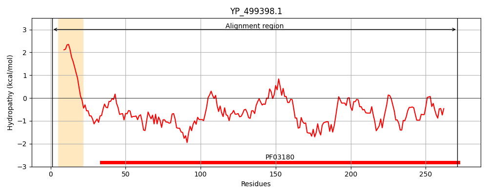
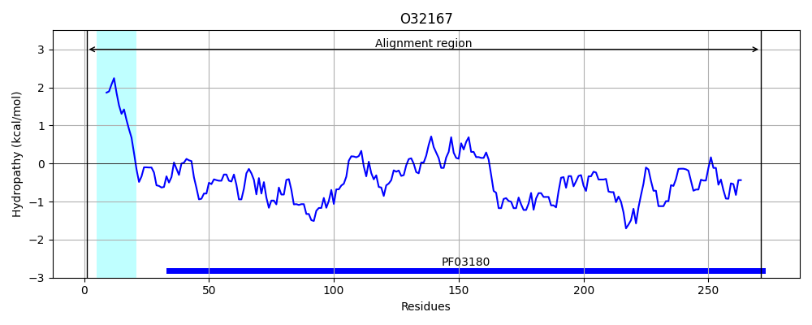
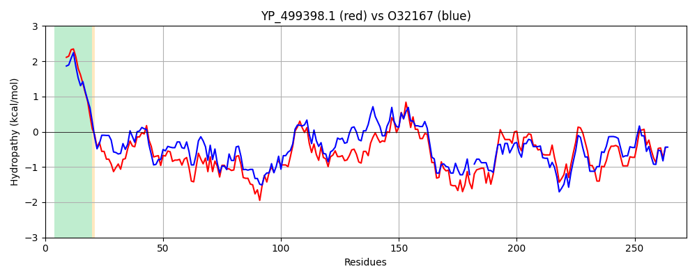

Hit Accession: O32167
Hit TCID: 3.A.1.24.2
Hit Description: gnl|BL_ORD_ID|7092 gnl|TC-DB|O32167|3.A.1.24.2 MetQ protein - Bacillus subtilis subsp. subtilis str. 168.
Mach Len: 272
e:0.000000
Query TMS Count : 1
Hit TMS Count: 1
TMS-Overlap Score: 0.850000
Predicted Substrates:CHEBI:45761;L-methionine (R)-S-oxide residue, CHEBI:6829;methionine
BLAST Alignment:
Score: 756 , Bit scores: 295 bits, E-value: 4.8e-101, Alignment length: 272, Percentage identity: 56
Query: 1 MKKLFGLILVLTFAVVLAACGNGNKSGSDDKKITVGASPAPHAEILEKAKPLLEKKGYELDIKTINDYTTPNKLLDKGEIDANYFQHTPYLNTEKKDK-GYKIVSAGDVHLEPMAVYSKKYKSLKELPKGATVYVSNNPAEQGRFLKFFVDAGLIKIKKGVKIEDAKFSDITENKKDIKFNNKQSAEFLPKIYQNEDADAVIINSNFAIEQKLNPKKDSIAVESAKDNPYANLIAVKEGHQDDKKIKALIEVLQSKDIQDFINEKYNGAVIP 271
MKKLF L+L FA V+AACG+ N + S K+I V A+ PHAEIL++A+PLL++KGY L +K ++DY NK L E+DANYFQH PYL E K+ YK+V+AG VHLEP +YSK YKSLK+LP GAT+ ++NN AEQGR L +AGLI + V+ DA DI +N K+++F K + E K Y+N++ DAV IN N+AI+ KLNPKKD+I VES K+NPYAN+IAV++G +D KIKAL+EVL SK I+DFI +KY+GAV+P
Sbjct: 1 MKKLFLGALLLVFAGVMAACGSNNGAESGKKEIVVAATKTPHAEILKEAEPLLKEKGYTLKVKVLSDYKMYNKALADKEVDANYFQHIPYLEQEMKENTDYKLVNAGAVHLEPFGIYSKTYKSLKDLPDGATIILTNNVAEQGRMLAMLENAGLITLDSKVETVDATLKDIKKNPKNLEFK-KVAPELTAKAYENKEGDAVFINVNYAIQNKLNPKKDAIEVESTKNNPYANIIAVRKGEEDSAKIKALMEVLHSKKIKDFIEKKYDGAVLP 271 | Protein Hydropathy Plots: |
|---|
|  |  |
Pairwise Alignment-Hydropathy Plot:
|
|---|
|  |